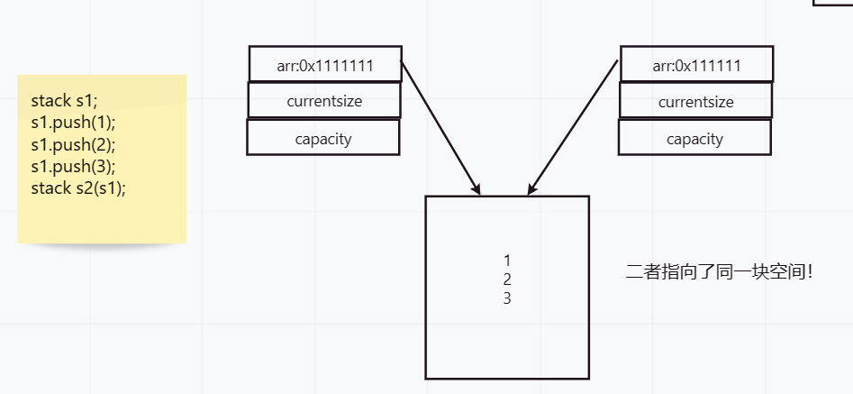

在C++中，有许多
默认成员函数，如默认构造函数、拷贝构造函数和析构函数等。这些默认成员函数在代码中扮演着重要的角色，它们可以帮助开发者快速构建对象、复制对象和释放对象。然而，这些默认成员函数的使用也有一些需要注意的细节和技巧。本文将详细介绍C++中的默认成员函数，包括其作用、使用方法、注意事项和实例说明等，旨在帮助读者深入了解和掌握这些重要的语言特性，从而写出更加高效可靠的代码。
概览
一个类没有成员，称为空类。但一个空类却并不为空。
编译器会在其中为开发者默认生成了两大类成员函数。
构造函数：当创建一个对象时，如果没有显式地提供构造函数，编译器会自动生成一个默认构造函数。默认构造函数的主要功能是初始化成员变量，使对象能够正确地工作。
析构函数：当一个对象生命周期结束时，如果没有显式地提供析构函数，编译器会自动生成一个默认的析构函数。析构函数的主要功能是释放对象占用的资源，如释放动态分配的内存等。
拷贝构造函数：当一个对象要被复制到另一个对象中时，如果没有显式地提供拷贝构造函数，编译器会自动生成一个默认的拷贝构造函数。拷贝构造函数的主要功能是将一个已有对象的值复制到新的对象中。
拷贝赋值运算符：当一个对象要被赋值给另一个对象时，如果没有显式地提供拷贝赋值运算符，编译器会自动生成一个默认的拷贝赋值运算符。拷贝赋值运算符的主要功能是将一个已有对象的值赋值给另一个对象。
如果我们在类中显式地定义了这些成员函数，则编译器不会再生成默认版本。而且，如果我们定义了其中的某一个成员函数，则最好
也定义其它成员函数，以保证它们能够协同工作，避免出现一些难以预料的问题。
取地址重载也可以算作默认成员函数的成员。主要是普通对象和const对象取地址，在文章后面也会提到。
创建一个class data，作为示例。
class data{
private:
int _day;
int _month;
int _year;
};
构造函数
再未了解构造函数前，我们想要对类中private修饰的成员变量赋值，需要写一个函数来访问它。
date d1;
d1._day = 2;
这样的案例是错误的，编译器报错：成员不可访问。因为此时的_day成员被private所修饰，只能在类里对其进行访问。
使用private的好处是极多的。建议将类中的成员变量用private来修饰实现封装，是因为这样能够有效地保护数据，防止外部的非法访问和修改，从而提高程序的安全性和可靠性。
封装可以做到：
-
隐藏实现细节：将成员变量封装在类的私有部分，可以隐藏实现细节，避免外部直接访问和修改，从而保证数据的
安全性和完整性。 -
提高代码复用性：类的成员变量只有在
类的内部才能访问，所以可以在类的内部定义一些公共的成员函数，通过这些函数来访问和修改成员变量，从而实现代码的复用。 -
方便代码维护：成员变量只能通过类的公共接口来访问，所以如果需要修改成员变量或者添加新的成员变量，只需要
修改类的公共接口，而不需要修改外部的代码。
那么此时我们可能会采取写一个init函数来对成员变量进行初始化。这也正是构造函数的职能。
void init(int day, int month, int year) {
_day = day;
_month = month;
_year = year;
}
构造函数并不是如他的名字——去创建一个对象，而是参与了对象中成员变量的初始化。
构造函数是一个特殊的函数，
名字与类名是相同的，在创建对象时就由编译器直接调用，且在对象整个生命周期内只调用一次。
构造函数有这样的几个特点：
- 函数名与类名是
相同的。比如date类的构造函数就叫date。 - 构造函数是
没有返回值的。 - 当对象进行实例化时，编译器会
自动调用此函数。 - 构造函数是可以进行重载的。
date() {
}
date(int day, int month, int year) {
_day = day;
_month = month;
_year = year;
}
如上，这样就实现了两个构造函数——一个有参构造，一个无参构造。因为其支持重载，所以这样设置是没问题的。
date d1(12,1,2012); //调用有参构造
date d2; //调用无参构造,注意不能写成date d2()
当用户未进行显示定义时，编译器会
自动生成一个无参构造函数。但一旦用户定义了，编译器就不会生成了。
在c++中，类型可以被分为两种：
像int，double这样的类型就是内置类型，也被称作基本类型。
而像上面定义的date类，就被叫做自定义类型。
编译器在调用无参构造时，内置类型可能是随机值，也可能是0这样的值，这点取决于编译器。而自定义类型就一定会调用该类自己的默认成员函数。
我们又创建了一个类——student，并将其放在date类中。
class student {
public:
student() {
age = 10;
name = "chengzi";
}
private:
string name;
int age;
};
class date {
public:
void init(int day, int month, int year) {
_day = day;
_month = month;
_year = year;
}
//date() {
//}
//date(int day, int month, int year) {
// _day = day;
// _month = month;
// _year = year;
//}
private:
int _day;
int _month;
int _year;
student stu;
};
运行截图如下（vs2022）：
可以看到，虽然date的几个基本类型是随机值，但stu里带的成员变量因为调用了自身的默认构造，所以不是随机值。注意，调用的必须是默认构造也就是无参的哦。
在c++11中规定： 内置类型可以在类中声明时给出默认值。
int _day=1;
int _month=1;
int _year=1;
student stu;
运行截图：

无参构造和全缺省都被称为默认构造，但两者只能存在一个，否则编译器不知道调用哪一个。
析构函数
析构函数负责对象的销毁。
但析构函数不是对对象本身进行销毁，而是在编译器出手销毁时，作为一个强有力的工具，来帮助完成对象资源的清理。
析构函数的特征:
- 析构函数的名就是在
类名前加上一个~即可。 - 同样的，析构函数没有返回值。
- 析构函数是
不支持重载的。 - 在对象生命周期结束时，由编译器亲自调用析构函数。
析构函数适用于哪些情景呢？
- 动态分配内存：当我们使用动态分配内存时，需要使用析构函数来释放这些动态分配的内存，防止
内存泄漏。 - 对象销毁前的清理工作：当我们需要在对象销毁前进行一些清理工作时，可以使用析构函数来实现。例如，我们可以在析构函数中关闭对象的一些状态，保存对象的一些状态等等。
所以当类中没有申请资源时，就不用写析构函数了，例如上面date类或者student类。而一旦类中进行了动态内存分配，我们就必须得自己写一个析构函数。
例如我们创建了一个类——stack。就必须要手动进行释放。
class stack {
public:
stack(int capacity) {
arr = (int*)malloc(sizeof(int) * capacity);
currentsize = 0;
}
~stack() {
if (arr) {
free(arr);
arr = NULL;
}
}
private:
int* arr;
int capacity;
int currentsize;
};
同样的，默认的析构函数会调用自定义成员变量默认的析构函数（如果类中存在自定义成员变量的话）。
- 构造顺序是按照语句的顺序进行构造，析构是按照构造的
相反顺序进行析构。
题1.函数F中，本地变量a和b的构造函数(constructor)和析构函数(destructor)的调用顺序是: ( )
Class A;
Class B;
void F() {
A a;
B b;
}
答案是a构造 b构造 b析构 a析构。
题2.设已经有A,B,C,D4个类的定义，程序中A,B,C,D析构函数调用顺序为？（ ）
C c;
int main()
{
A a;
B b;
static D d;
return 0；
}
-
类的析构函数调用一般按照构造函数调用的相反顺序进行调用，但是要注意static对象的存在，因为static改变了对象的生存作用域，需要等待程序结束时才会析构释放对象。
-
全局对象先于局部对象进行构造。 -
局部对象按照出现的顺序进行构造，无论是否为static。
-
所以构造的顺序为C A B D。
-
析构的顺序按照构造的相反顺序析构，只需注意
static改变对象的生存作用域之后，会放在局部对象之后进行析构。 -
因此析构顺序为B A D C。
拷贝构造函数
拷贝构造适用于创建一个与原对象一模一样的新对象。
且拷贝构造是一个构造函数的重载，且只有单个形参。
形参必须为类类型对象的引用，如果使用的是传值，那么编译器会报错。
date(const date& d) {
_day = d._day;
_month = d._month;
_year = d._year;
stu = d.stu;
}
如果传递的是const date d，那么会引起
无限制的调用。
因为c++规定，在函数里调用自定义类型，必须要调用其拷贝构造来完成。因为传值通常就意味着拷贝，这点还是很好去理解的。只不过相较于内置类型的直接拷贝，自定义类型的传值拷贝稍微要麻烦一点点。
如果是传值，不就陷入了一个无穷的递归之中了吗？传值就要拷贝，拷贝就要调用拷贝构造，这不是没完没了了？
当用户未在类中设置显式定义，编译器会生成默认的拷贝构造函数。此函数可以按照字节序进行拷贝（也被称为浅拷贝）。
所以如果还是使用date或者student类，仍然没有必要去写一个拷贝构造函数。那换成上面的stack类呢？
答案是不行。
因为在stack类里我们定义了一个arr作为栈的基址。当使用浅拷贝的时候，拷贝过去的仍然是这个基址。
当程序准备退出时，stack1和stack2都要调用析构函数进行销毁，无论哪个对象先调用析构进行销毁，等到下一个对象要销毁时，发现arr那块空间的支配权已经还给了系统了，同时多次的内存空间释放必然会造成程序崩溃。

所以我们需要自行写一个拷贝构造函数。也就是深拷贝。
stack(const stack& stack1) {
arr = (int*)malloc(sizeof(int) * stack1.capacity);
memcpy(arr, stack1.arr, sizeof(int) * stack1.currentsize);
capacity = stack1.capacity;
currentsize = stack1.currentsize;
}
拷贝构造的使用方式为：
stack s2(s1); //s2为要拷贝的目标，s1为拷贝的原本
总结一下构造函数的适用场景：
- 如上所示的stack s2(s1)，利用一个
已存在的对象来创建新对象。 - 函数中有
参数为类类型的对象。如add(date d1)这个函数，调用了d1这个对象，那么在传参的过程中必然会使用到拷贝构造。 - 函数
返回值有类类型对象也是同样道理。
运算符重载
基本概念
运算符重载的引入是为了增强c++的代码可读性。其函数名为： operator接需要重载的运算符号。
并且在重载运算符中必须含有至少一个类类型的参数。
比如重载一个判断两日期是否相等的==。
bool operator==(const date& d1) {
return d1._year == _year && d1._month == _month && d1._day == _day;
}
请注意： :: ,sizeof,?:, ., .*不可被重载！
赋值运算符重载
赋值运算符重载是运算符重载的一种特例，它主要用于实现自定义类型的深拷贝。这个我们后面再说。
既然是赋值运算符重载，那么必然和普通的运算符重载有些许的区别，最明显的地方就在于返回值。
赋值运算符的返回值类型应该是一个引用，其目的是支持连续赋值。比如a=b=c，如果仍然按照上面的bool型返回，a=b判断后返回一个true或者false，那又该如何去判断c呢？为了实现连续判断肯定会返回一个类对象的引用。
参数类型也常用引用，目的是为了提高效率。
date& operator=(const date& d1) {
_year = d1._year;
_day = d1._day;
_month = d1._month;
return *this;
}
如上，*this的用法是需要重点理解的。
在C++中，return *this是一个返回当前对象引用的语句，常用于实现链式调用。例如：
class Class {
public:
Class& func1() {
// do something
return *this;
}
Class& func2() {
// do something
return *this;
}
};
在上面的示例中，func1()和func2()都返回MyClass类型的对象引用，因此可以在它们之间进行链式调用，如下所示：
Class obj;
obj.func1().func2();
这样的代码能够更加简洁和易读。同时，使用return *this也可以避免出现多余的对象拷贝操作，提高代码的效率。*this代表着返回当前对象，return *this与date &作为返回值，则代表返回引用，引用就不必经过许多繁琐的拷贝工作，也就提高了效率。
c++也规定： 赋值运算重载只能是类的成员函数！
其中比较重要的一点原因：赋值运算符是作用于对象上的，而对象是类的实例，因此赋值运算符必须能够访问类的私有成员，只有类的成员函数才能够访问类的私有成员，因此赋值运算符重载只能作为类的成员函数来定义。除此之外，赋值运算符重载还需要返回一个对象的引用，这个引用指向赋值后的对象。如果赋值运算符重载作为全局函数或友元函数来定义，则无法访问对象的私有成员，并且无法返回对象的引用，因此无法实现赋值运算符的重载。
当用户未显式实现时，编译器也会自动生成一个默认的赋值运算符重载，以值的方式逐字节拷贝。
那么如果还是date这种类，直接使用默认的即可。
void assignment(date& d1) {
(*this) = d1;
}
date d1(22,22,22);
date d2;
d2.assignment(d1);
编译结果：
但要是stack这样的类就不行了。s2=s1，将s1的内容拷贝给s2，那么s2和s1指向同一片空间不说，s2赋值后还会丢失原本的空间，导致内存泄漏，最终释放两次相同的空间也一定会造成程序崩溃。所以stack这样的类需要的是深拷贝。
请牢记，只要涉及到资源管理，那么一定需要重写赋值运算符。
// 赋值运算符重载，实现深拷贝
stack& operator=(const stack& other) {
if (this == &other) {
return *this; // 处理自赋值
}
// 分配新资源并复制数据
capacity = other.capacity;
currentsize = other.currentsize;
arr = (int*)malloc(sizeof(int) * capacity);
std::memcpy(arr, other.arr, sizeof(int) * currentsize);
return *this;
}
一些运算符重载示例
bool operator<(const date& x)
{
if (_year < x._year)
{
return true;
}
else if (_year == x._year && _month < x._month)
{
return true;
}
else if (_year == x._year && _month == x._month && _day < x._day)
{
return true;
}
return false;
}
bool operator==(const date& x)
{
return _year == x._year
&& _month == x._month
&& _day == x._day;
}
bool operator<=(const date& x)
{
return *this < x || *this == x;
}
bool operator>(const date& x)
{
return !(*this <= x);
}
bool operator>=(const date & x)
{
return !(*this < x);
}
bool operator!=(const date& x)
{
return !(*this == x);
}
date operator+(int day)
{
date tmp(*this);
tmp += day;
return tmp;
}
// 前置++
date& operator++()
{
*this += 1;
return *this;
}
// 后置++
// 增加这个int参数不是为了接收具体的值，仅仅是占位，跟前置++构成重载
date operator++(int)
{
date tmp = *this;
*this += 1;
return tmp;
}
至于开头提到的取地址与取地址操作符重载 ,基本不会在日常生活中使用，想要了解的可以自行谷歌。